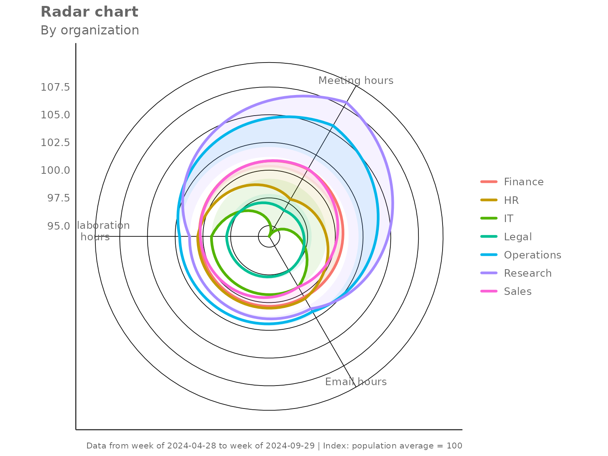
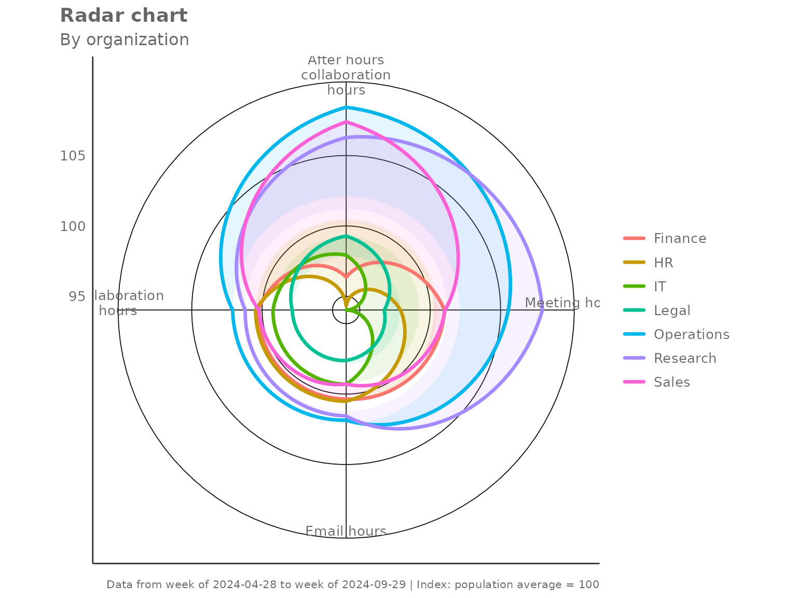
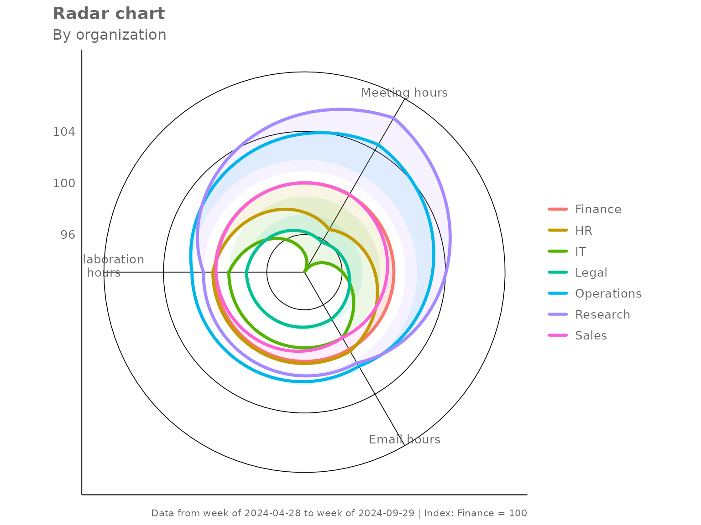
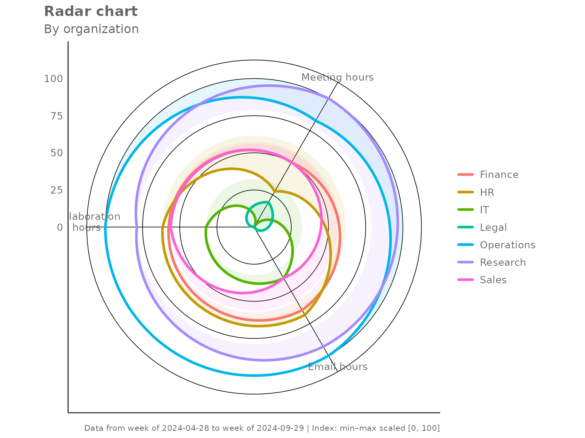
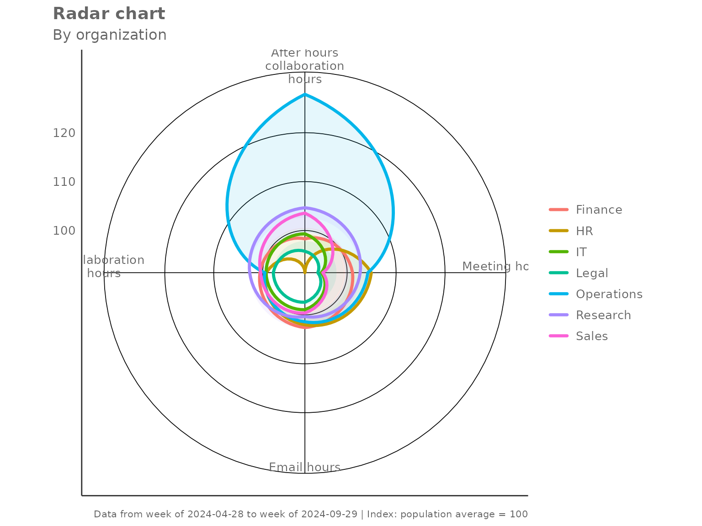
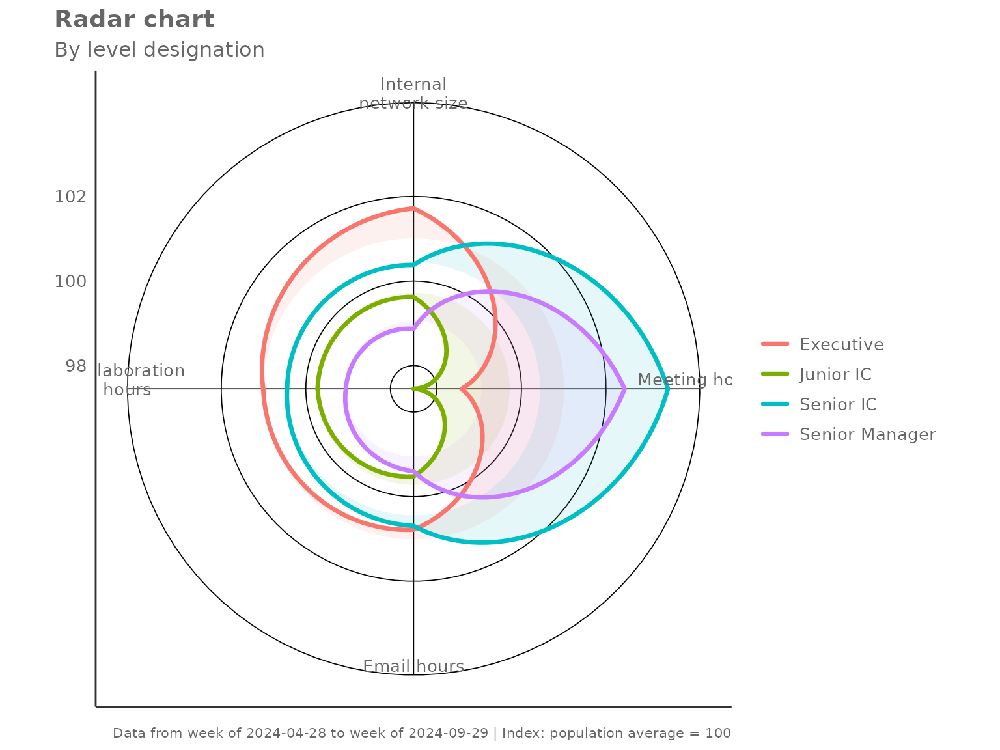
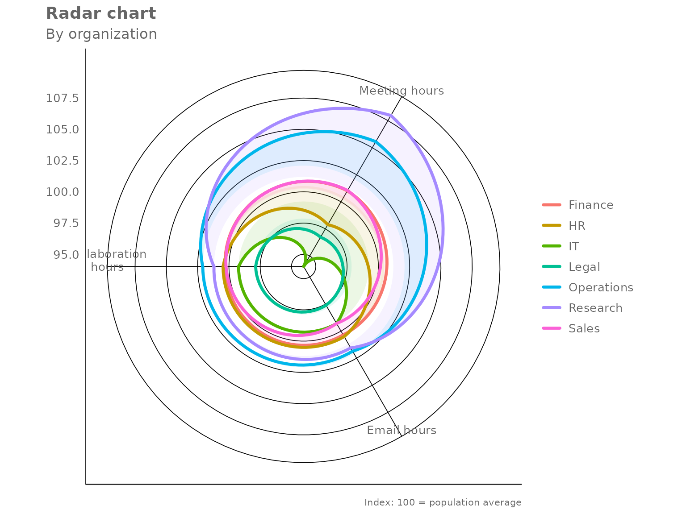

Radar Charts with create_radar()
vivainsights
2026-03-23
Source:vignettes/radar-charts.Rmd
radar-charts.RmdOverview
create_radar() produces a multi-group radar (spider)
chart that compares several metrics simultaneously across different
segments of your workforce. The key steps inside the function are:
- Person-level aggregation — averages (or medians) each metric per person per group.
- Group-level aggregation — summarises person-level values to one row per group.
-
Privacy filtering — drops groups below
mingroupunique persons. - Optional indexing — rescales values so groups are easy to compare.
Basic usage
Pass a data frame, a character vector of metric columns, and a grouping column. By default the chart indexes each metric so that the overall population mean equals 100.
create_radar(
data = pq_data,
metrics = c("Collaboration_hours", "Email_hours", "Meeting_hours"),
hrvar = "Organization",
mingroup = 5
)
Each polygon represents one group. A value of 100 on any axis means that group sits exactly at the population average for that metric; values above 100 indicate above-average activity and values below 100 indicate below-average activity.
Returning the underlying table
Set return = "table" to get the indexed values as a data
frame instead:
radar_tbl <- create_radar(
data = pq_data,
metrics = c("Collaboration_hours", "Email_hours", "Meeting_hours"),
hrvar = "Organization",
mingroup = 5,
return = "table"
)
radar_tbl
#> # A tibble: 7 × 5
#> Organization Collaboration_hours Email_hours Meeting_hours n
#> <chr> <dbl> <dbl> <dbl> <int>
#> 1 Finance 100. 100. 101. 68
#> 2 HR 100. 101. 97.9 33
#> 3 IT 99.2 99.3 94.0 68
#> 4 Legal 97.9 97.6 96.7 44
#> 5 Operations 102. 102. 106. 22
#> 6 Research 101. 102. 108. 52
#> 7 Sales 100. 99.3 101. 13The n column records the number of unique persons in
each group — useful for checking which groups are close to the privacy
threshold.
Indexing modes
The index_mode parameter controls how metric values are
rescaled before plotting.
"total" (default)
Each metric is divided by the overall population mean and multiplied by 100. A group at 100 matches the average.
create_radar(
data = pq_data,
metrics = c("Collaboration_hours", "Email_hours",
"Meeting_hours", "After_hours_collaboration_hours"),
hrvar = "Organization",
mingroup = 5,
index_mode = "total"
)
"ref_group" — benchmark against one group
Set index_ref_group to the name of the group that should
equal 100 on every axis. All other groups are expressed relative to
it.
create_radar(
data = pq_data,
metrics = c("Collaboration_hours", "Email_hours", "Meeting_hours"),
hrvar = "Organization",
mingroup = 5,
index_mode = "ref_group",
index_ref_group = "Finance"
)
"minmax" — relative spread within observed groups
Each metric is scaled so the lowest group maps to 0 and the highest to 100. This maximises visual contrast and is useful when absolute levels matter less than which group is highest or lowest.
create_radar(
data = pq_data,
metrics = c("Collaboration_hours", "Email_hours", "Meeting_hours"),
hrvar = "Organization",
mingroup = 5,
index_mode = "minmax"
)
"none" — raw group values
No rescaling is applied. The axes carry the original units, which makes cross-metric comparison harder but preserves the absolute magnitude.
create_radar(
data = pq_data,
metrics = c("Collaboration_hours", "Email_hours", "Meeting_hours"),
hrvar = "Organization",
mingroup = 5,
index_mode = "none",
return = "table"
)
#> # A tibble: 7 × 5
#> Organization Collaboration_hours Email_hours Meeting_hours n
#> <chr> <dbl> <dbl> <dbl> <int>
#> 1 Finance 23.1 8.79 18.9 68
#> 2 HR 23.1 8.80 18.3 33
#> 3 IT 22.8 8.70 17.6 68
#> 4 Legal 22.5 8.55 18.1 44
#> 5 Operations 23.5 8.92 19.8 22
#> 6 Research 23.3 8.89 20.2 52
#> 7 Sales 23.1 8.70 18.9 13Aggregation method
The default two-step aggregation uses the mean at
both the person level and the group level. Switch to
agg = "median" for robustness against outliers.
create_radar(
data = pq_data,
metrics = c("Collaboration_hours", "Email_hours",
"Meeting_hours", "After_hours_collaboration_hours"),
hrvar = "Organization",
mingroup = 5,
agg = "median"
)
Grouping by a different HR variable
Any character column can serve as the grouping variable. Here we
compare collaboration profiles by LevelDesignation:
create_radar(
data = pq_data,
metrics = c("Collaboration_hours", "Email_hours",
"Meeting_hours", "Internal_network_size"),
hrvar = "LevelDesignation",
mingroup = 5
)
Privacy filtering with mingroup
Groups with fewer than mingroup unique persons are
silently dropped before plotting. Raise the threshold to be more
conservative:
# Only show groups with 20 or more unique persons
create_radar(
data = pq_data,
metrics = c("Collaboration_hours", "Email_hours", "Meeting_hours"),
hrvar = "Organization",
mingroup = 20,
return = "table"
)
#> # A tibble: 6 × 5
#> Organization Collaboration_hours Email_hours Meeting_hours n
#> <chr> <dbl> <dbl> <dbl> <int>
#> 1 Finance 100. 100. 101. 68
#> 2 HR 100. 101. 97.9 33
#> 3 IT 99.2 99.3 94.0 68
#> 4 Legal 97.9 97.6 96.7 44
#> 5 Operations 102. 102. 106. 22
#> 6 Research 101. 102. 108. 52Handling missing values
By default (na.rm = FALSE) the function retains rows
with NA metric values and lets the aggregation handle them.
Set na.rm = TRUE to drop any row containing an
NA in any of the requested metrics before aggregation —
this is equivalent to a complete-cases analysis.
create_radar(
data = pq_data,
metrics = c("Collaboration_hours", "Email_hours"),
hrvar = "Organization",
mingroup = 5,
na.rm = TRUE,
return = "table"
)
#> # A tibble: 7 × 4
#> Organization Collaboration_hours Email_hours n
#> <chr> <dbl> <dbl> <int>
#> 1 Finance 100. 100. 68
#> 2 HR 100. 101. 33
#> 3 IT 99.2 99.3 68
#> 4 Legal 97.9 97.6 44
#> 5 Operations 102. 102. 22
#> 6 Research 101. 102. 52
#> 7 Sales 100. 99.3 13Using the lower-level helpers directly
create_radar() is built from two exported helpers that
you can call independently:
-
create_radar_calc()— returns a list with$table(the indexed group-level data frame) and$ref(the reference values used for indexing). -
create_radar_viz()— accepts the$tableoutput and returns aggplotobject.
This is useful when you want to post-process the table before plotting, or when you want to apply a custom theme on top of the default:
library(ggplot2)
calc <- create_radar_calc(
data = pq_data,
metrics = c("Collaboration_hours", "Email_hours", "Meeting_hours"),
hrvar = "Organization",
mingroup = 5,
index_mode = "total"
)
# Inspect the reference values used for indexing
calc$ref
#> Collaboration_hours Email_hours Meeting_hours
#> 23.006284 8.757513 18.713626
# Render with an extra annotation layer
create_radar_viz(
data = calc$table,
metrics = c("Collaboration_hours", "Email_hours", "Meeting_hours"),
hrvar = "Organization"
) +
labs(caption = "Index: 100 = population average")